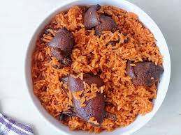

MEAT JOLLOFRICE

Doesn't it smell delicious from the picture alone
Do not worry, i know your brain is going "how can i make this this masterpiece"
Well i'm not here to make you just salivate,but to share with you my secret recipe
let's get into it;
INGREDIENTS:
- Rice
- Meat of your choice(i prefer goat) and some sausage(not necessary)
- Maggi(or any seasoning of your choice)
- Tomato paste
- Onions
- Salt
- Oil
- Fresh tomato
- Fresh pepper
- Ginger and garlic
That's about all we need, let's get cooking
PROCEDURE:
- Wash and cut your meat into small(not too small) pieces into a saucepan.
- Blend some garlic,ginger and onion and add to your meat,add a little water,salt to taste and leave to steam on your heat source.
- In about fifteen(15) minutes take your meat off the fire(reserve the stock)and fry
- In a different saucepan,add a moderate amount of oil,dice some onions and tomatoes(i prefer two(2) medium-sized onions and one(1) tomato)into oil.
- Dice your sausages(if you added to your ingrediens), into oil and let it fry for about two(2) minutes.
- Blend some tomatoes,onions and pepper(your spice limit), add to your sausages and stir.
- Add your tomato paste(one sachet for one cup of rice),leave to heat for about two(2) minutes.
- Add your seasonings and stir,taste while adding because you dont want the food too sweet.
- Add in your fried meat,stir and wait for about two to three minutes.
- Rinse your rice and add to your saucepan,mix together and add water just a bit over the level of your mixture.
- Check in from time to time,and in about thirty(30) minutes your food should be ready
voila, food is ready